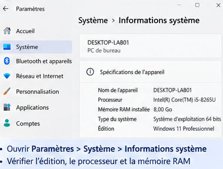
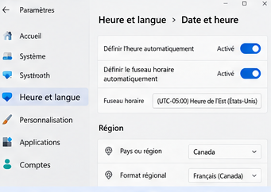
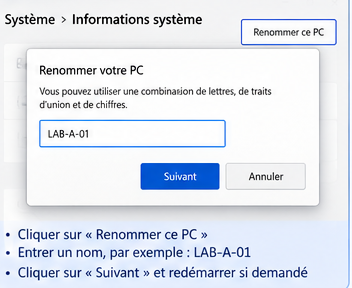
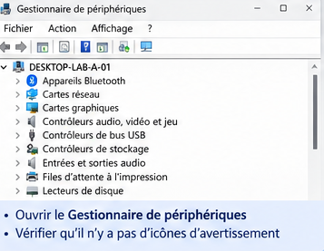
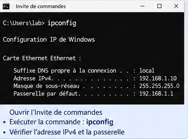
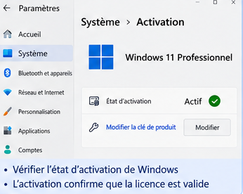
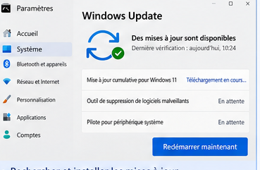
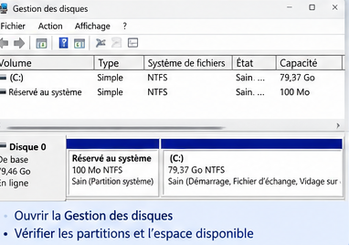
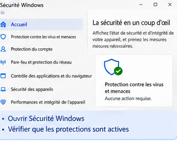
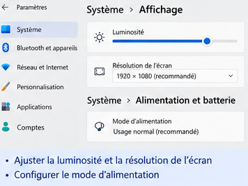

Configuration après installation
Finaliser un poste Windows après l’installation : vérifier le système, configurer les paramètres essentiels, préparer les pilotes, le réseau et la sécurité de base, puis valider que le poste est prêt à être utilisé.
1. Qu’est-ce que la configuration après installation ?
Définition
La configuration après installation regroupe les opérations réalisées après l’installation du système d’exploitation afin de rendre le poste fonctionnel, cohérent avec son environnement et prêt pour les étapes suivantes de déploiement.
L’apparition du bureau Windows ne signifie donc pas que le travail est terminé. Le technicien doit encore vérifier le matériel détecté, le réseau, les paramètres régionaux, l’état de Windows, les mises à jour disponibles et plusieurs paramètres essentiels.
Exemple
Windows démarre correctement, mais la carte réseau n’est pas reconnue et la résolution d’écran est limitée. Le système est installé, mais le poste n’est pas encore correctement configuré.
2. Effectuer une première vérification du système
La première étape consiste à confirmer que l’installation correspond au scénario prévu et que Windows fonctionne normalement.
| Élément | Question de vérification |
|---|---|
| Édition de Windows | L’édition installée correspond-elle à celle prévue ? |
| Architecture | Le système est-il bien en 64 bits lorsque cela est attendu ? |
| Processeur et RAM | Les ressources principales sont-elles correctement détectées ? |
| Stockage | Le volume système et sa capacité correspondent-ils au disque préparé ? |
| Démarrage | Windows démarre-t-il normalement depuis le disque installé ? |
Accès
Dans Windows 11, les informations générales peuvent être consultées dans Paramètres → Système → Informations système. L’intitulé exact de certains éléments peut varier légèrement selon la version de Windows.

3. Vérifier la date, l’heure, la région et le clavier
Ces paramètres influencent l’utilisation quotidienne du poste, l’affichage des dates, la saisie et certains services réseau. Une heure incorrecte peut également provoquer des problèmes avec des services qui dépendent d’une synchronisation temporelle correcte.

Points à contrôler
- fuseau horaire;
- date et heure;
- synchronisation automatique lorsque le contexte le permet;
- pays ou région;
- langue d’affichage;
- disposition du clavier.
4. Donner un nom cohérent à l’ordinateur
Nom de l’ordinateur
Le nom de l’ordinateur permet d’identifier le poste dans Windows et dans différents contextes réseau ou administratifs. Dans un laboratoire ou une organisation, une convention de nommage facilite la gestion des machines.
LAB-A-01, PC-COMPTA-07 ou VM-W11-TEST. La convention doit être définie par l’organisation plutôt qu’inventée différemment sur chaque poste.Le renommage peut être effectué depuis les paramètres système. Un redémarrage peut être demandé pour appliquer complètement le changement.

5. Vérifier les périphériques détectés
Après l’installation, Windows doit reconnaître les composants nécessaires au fonctionnement du poste. Le Gestionnaire de périphériques permet d’examiner le matériel détecté et d’identifier les périphériques présentant un problème.
Accès
Une méthode simple consiste à effectuer un clic droit sur le bouton Démarrer, puis à ouvrir Gestionnaire de périphériques.

Que rechercher ?
- un périphérique inconnu;
- un périphérique signalé avec un avertissement;
- une carte réseau absente;
- un contrôleur non reconnu;
- un affichage utilisant uniquement un pilote générique lorsque le matériel nécessite un pilote spécifique.
6. Vérifier la configuration réseau
Un poste nouvellement installé doit être capable d’utiliser le réseau prévu par le laboratoire ou l’organisation. La présence d’une icône réseau ne suffit pas : il faut vérifier l’interface et tester la connectivité.
Vérifications de base
- Confirmer que l’adaptateur réseau est détecté.
- Vérifier que la connexion Ethernet ou Wi-Fi attendue est disponible.
- Contrôler que le poste reçoit une configuration IP adaptée au réseau.
- Tester l’accès aux ressources prévues ou à Internet lorsque cela est autorisé.

Commande utile
Dans l’Invite de commandes, la commande suivante affiche les informations principales de configuration IP :
ipconfigPour obtenir davantage de détails sur les interfaces réseau :
ipconfig /allipconfig dans une VM Windows. Identifiez l’interface active et l’adresse IPv4 affichée.7. Vérifier l’état de l’activation Windows
Définition
L’activation est le mécanisme utilisé par Windows pour vérifier l’état de licence du système. Elle est distincte de l’installation : un système peut être installé avant que son état d’activation ne soit vérifié ou finalisé.
Accès
Dans Windows 11, l’état d’activation peut être consulté dans Paramètres → Système → Activation.

8. Configurer Windows Update
Windows Update est le service de Windows utilisé pour rechercher et appliquer différents types de mises à jour du système. Après une nouvelle installation, plusieurs mises à jour peuvent être nécessaires.

Procédure générale
- Ouvrir Paramètres → Windows Update.
- Lancer une recherche de mises à jour.
- Examiner les mises à jour proposées.
- Laisser les téléchargements et installations se terminer.
- Redémarrer si Windows le demande.
- Revenir dans Windows Update et vérifier de nouveau l’état du système.
9. Vérifier le stockage après installation
Le technicien doit confirmer que Windows utilise le volume prévu et que la structure du stockage correspond au scénario d’installation.
Vérifications
- capacité du volume système;
- espace libre disponible;
- présence des volumes de données attendus;
- lettres de lecteur lorsque celles-ci sont utilisées;
- absence de volume important oublié ou inaccessible;
- cohérence avec le partitionnement prévu avant l’installation.
La console Gestion des disques permet d’observer les disques, partitions et volumes. À cette étape, privilégiez l’observation : ne supprimez ou ne reformatez pas une partition simplement pour « tester ».

10. Vérifier la sécurité de base
Après l’installation, le poste doit disposer des protections attendues par l’environnement. Windows intègre plusieurs fonctions de sécurité accessibles notamment à travers l’application Sécurité Windows.

Contrôles de base
- vérifier l’état général présenté par Sécurité Windows;
- confirmer que le pare-feu est dans l’état prévu par l’organisation;
- vérifier la protection antivirus/antimalware prévue;
- s’assurer que les mises à jour de sécurité peuvent être reçues;
- ne pas désactiver une protection uniquement pour faire disparaître un avertissement.
11. Vérifier les paramètres d’alimentation
Les paramètres d’alimentation déterminent notamment le comportement de l’écran, de la mise en veille et de certains scénarios énergétiques. Ils doivent correspondre à l’utilisation prévue du poste.
Exemple
Un ordinateur portable destiné à un étudiant et un poste de laboratoire qui doit rester disponible pendant une longue installation n’ont pas nécessairement les mêmes besoins de mise en veille.
12. Configurer les options d’affichage essentielles

Après l’installation, vérifiez que la résolution, la mise à l’échelle et la disposition des écrans correspondent au matériel et au contexte d’utilisation.
Signes d’un problème
- résolution anormalement faible;
- écran secondaire non détecté;
- mise à l’échelle inadaptée;
- absence du pilote graphique approprié.
Un problème d’affichage peut provenir d’un paramètre, mais également d’un pilote. Il faut donc observer le Gestionnaire de périphériques avant de conclure à une panne matérielle.
13. Créer un point de contrôle de l’état du poste
Une fois les vérifications principales terminées, il est utile de documenter l’état du poste. Dans un environnement de laboratoire virtualisé, un snapshot peut également servir de point de retour avant de commencer des manipulations ultérieures.
Informations à documenter
- nom du poste;
- édition et version de Windows;
- état de l’activation;
- état des périphériques;
- état de Windows Update;
- configuration réseau de base;
- capacité de stockage;
- problèmes restant à résoudre.
14. Manipulation guidée — finaliser une installation Windows
Réalisez cette manipulation sur la VM Windows créée pendant la leçon d’installation.
- Ouvrir les informations système et relever l’édition, l’architecture, le processeur et la RAM.
- Vérifier la date, l’heure, la région et le clavier.
- Vérifier ou attribuer le nom du poste selon la convention du laboratoire.
- Ouvrir le Gestionnaire de périphériques et rechercher les périphériques signalés.
- Vérifier le réseau et relever les informations principales avec
ipconfig. - Consulter l’état de l’activation.
- Ouvrir Windows Update et vérifier les mises à jour.
- Observer Gestion des disques et identifier le volume système.
- Consulter Sécurité Windows et relever les éventuels avertissements.
- Vérifier l’affichage et l’alimentation.
- Redémarrer la VM lorsque les opérations effectuées le nécessitent.
- Compléter une fiche de validation avant de déclarer le poste prêt.
15. Diagnostic — le poste est-il réellement prêt ?
Un poste est considéré comme correctement préparé lorsque les vérifications essentielles sont cohérentes avec son usage prévu. Un seul symptôme peut nécessiter plusieurs vérifications.
| Observation | Premières vérifications |
|---|---|
| Pas d’accès réseau | Adaptateur détecté, pilote, connexion, configuration IP et réseau du laboratoire. |
| Résolution très faible | Paramètres d’affichage et pilote graphique. |
| Périphérique inconnu | Gestionnaire de périphériques et identification du matériel. |
| Heure incorrecte | Fuseau horaire, réglage automatique et synchronisation. |
| Mises à jour en attente | Windows Update, redémarrage puis nouvelle vérification. |
| Volume attendu absent | Gestion des disques et structure du stockage. |
Mise en situation — Préparer un poste pour un étudiant
Une nouvelle VM Windows vient d’être installée. Le bureau apparaît correctement, mais le nom du poste est générique, plusieurs mises à jour sont disponibles et l’étudiant signale que le réseau ne fonctionne pas.
- Quelles informations système vérifiez-vous en premier ?
- Comment déterminez-vous si le problème réseau provient d’un périphérique non reconnu ?
- Pourquoi faut-il vérifier Windows Update ?
- Quel nom pourriez-vous attribuer au poste si la convention du laboratoire est
LAB-A-XX? - Quelles vérifications finales effectuer avant de remettre le poste à l’étudiant ?
Activité de synthèse — Fiche de validation après installation
Créez une fiche de validation professionnelle comportant les catégories suivantes :
- identification du poste;
- version et édition de Windows;
- processeur et mémoire détectés;
- date, heure, région et clavier;
- état des périphériques;
- état du réseau;
- activation;
- Windows Update;
- stockage;
- sécurité de base;
- affichage et alimentation;
- anomalies observées et actions correctives.
Pour chaque catégorie, indiquez Conforme, À corriger ou Non vérifié, puis ajoutez une courte observation.